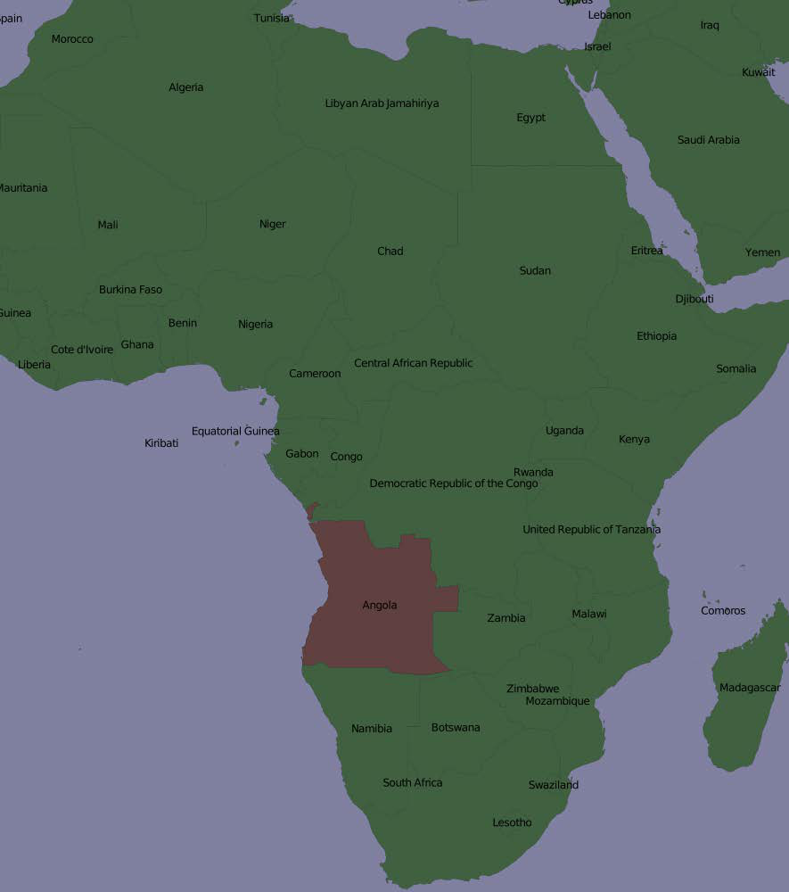
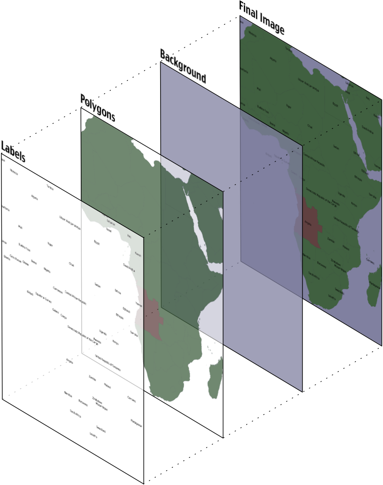
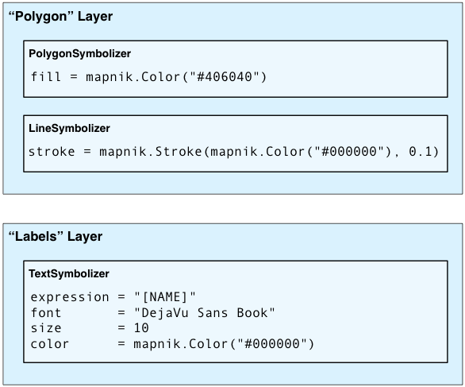
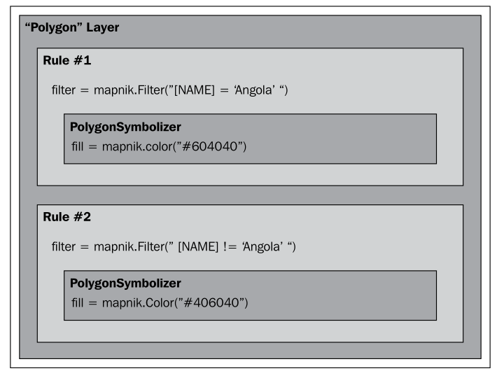
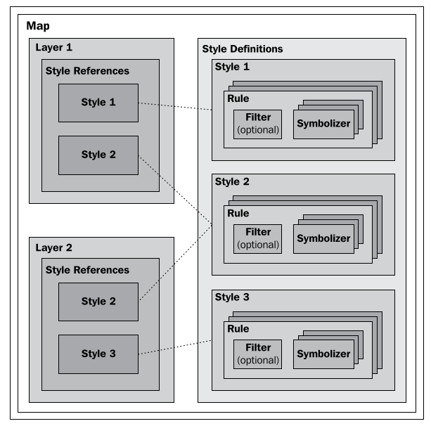

Mapnik 简介#
Introducing Mapnik
Mapnik 是一个强大的工具包，用于使用地理空间数据创建地图。可以从以下网址下载 Mapnik：
Mapnik 是一个复杂的库，包含许多不同的部分，容易让人对各种名称和概念感到困惑。让我们通过查看一张简单的地图来开始探索 Mapnik：
{kind=link}
有一点可能不那么明显，那就是地图中的各个元素是分层的，像这样：
{kind=link}
为了生成这张地图，你需要告诉 Mapnik 首先绘制背景，然后是多边形，最后是标签。这确保了多边形位于背景之上，标签则出现在多边形和背景的前面。
备注
严格来说，背景并不是一个图层。它只是一个颜色或图像，Mapnik 在开始绘制第一个图层之前将其绘制到地图上。
Mapnik 允许你通过使用图层对象来控制地图元素绘制的顺序。一个简单的地图可能只有一个图层，但大多数地图都有多个图层。图层是严格按照从后到前的顺序绘制的，因此你定义的第一个图层会位于最底层。在前面的例子中，“多边形”图层会首先定义，接着是“标签”图层，以确保标签出现在多边形的前面。这种分层方法被称为 画家的算法，因为它类似于将层层油漆涂抹到艺术家的画布上的过程。
每个图层都有自己的数据源，告诉 Mapnik 从哪里加载数据。数据源可以是 shapefile、空间数据库、栅格图像文件或其他任意数量的地理空间数据源。在大多数情况下，设置图层的数据源非常简单。
在每个图层中，地理空间数据的可视化显示是通过一种叫做 符号化器 的方式来控制的。虽然 Mapnik 中有许多不同类型的符号化器，但这里有三个符号化器是我们需要关注的：
PolygonSymbolizer 用于绘制填充的多边形：
LineSymbolizer 用于绘制多边形的轮廓，以及绘制线字符串和其他线性特征，如下所示：
TextSymbolizer 用于将标签和其他文本绘制到地图上：
在许多情况下，这三个符号化器就足以绘制一张完整的地图。事实上，几乎所有前面示例中的地图都是使用一个 PolygonSymbolizer、一个 LineSymbolizer 和一个 TextSymbolizer 绘制的：
在每个图层内，符号化器是通过前面提到的“画家算法”进行处理的。在这种情况下，LineSymbolizer 会绘制在 PolygonSymbolizer 之上。
请注意，符号化器并不是直接与图层关联的。相反，符号化器通过样式和规则与图层间接关联。稍后我们会详细讨论样式，但现在让我们先仔细看看 Mapnik 规则的概念。
规则 允许一组符号化器仅在满足特定条件时应用。例如，本章开始时的地图显示了安哥拉的不同颜色。这是通过在“多边形”图层中定义两个规则来实现的：
第一个规则有一个 过滤器，它只应用于 NAME 属性等于字符串“Angola”的特征。对于匹配此过滤条件的特征，将使用规则的 PolygonSymbolizer 以深红色绘制该特征。
第二个规则有一个类似的过滤器，这次检查 NAME 属性不等于“Angola”的特征。这些特征使用第二个规则的 PolygonSymbolizer 绘制，颜色为深绿色。
显然，规则在选择性地改变地图上特征的显示方式时非常强大。我们将在本章的 规则、过滤器和样式 部分更详细地探讨规则。
当你定义符号化器时，你将它们放入规则中。规则本身被组织到 样式 中，这些样式用于组织和跟踪你的各种规则。每个地图图层本身都有一个样式列表，适用于该特定图层。
尽管图层、样式、规则、过滤器和符号化器之间复杂的关系可能会令人困惑，但它也提供了 Mapnik 的强大功能和灵活性。理解这些不同类是如何协同工作的非常重要：
如你所见，你在地图中定义样式，而各个图层则引用你定义的样式。这与文字处理文档中的样式表类似，你定义样式并反复使用它们。请注意，同一样式可以在多个图层中使用。
最后，除了使用 Python 代码手动创建各种 Mapnik 对象外，你还可以选择使用 地图定义文件。这是一种 XML 格式的文件，定义了地图中的所有符号化器、过滤器、规则、样式和图层。你的 Python 代码只需创建一个新的 mapnik.Map 对象，并告诉 Mapnik 从 XML 定义文件中加载地图的内容。这样，你就可以将地图的内容与执行地图生成的 Python 代码分开定义，这与 HTML 模板引擎在 Web 应用中将表单和内容分离的方式类似。
Mapnik is a powerful toolkit for using geospatial data to create maps. Mapnik can be downloaded from:
Mapnik is a complex library with many different parts, and it is easy to get confused by the various names and concepts. Let’s start our exploration of Mapnik by looking at a simple map:
One thing that may not be immediately obvious is that the various elements within the map are layered, like this:
To generate this map, you have to tell Mapnik to initially draw the background, then the polygons, and finally the labels. This ensures that the polygons sit on top of the background, and the labels appear in front of both the polygons and the background.
备注
Strictly speaking, the background isn’t a layer. It’s simply a color or image that Mapnik draws onto the map before it starts drawing the first layer.
Mapnik allows you to control the order in which the map elements are drawn through the use of Layer objects. A simple map may consist of just one layer, but most maps have multiple layers. The layers are drawn in a strict back-to-front order, so the first layer you define will appear at the back. In the preceding example, the “Polygons” layer would be defined first, followed by the “Labels” layer, to ensure that the labels appear in front of the polygons. This layering approach is called the painter’s algorithm because of its similarity to placing layers of paint onto an artist’s canvas.
Each Layer has its own data source, which tells Mapnik where to load the data from. A data source can refer to a shapefile, a spatial database, a raster image file, or any number of other geospatial data sources. In most cases, setting up a Layer’s data source is very easy.
Within each Layer, the visual display of the geospatial data is controlled through something called Symbolizer. While there are many different types of symbolizers available within Mapnik, three symbolizers are of interest to us here:
The PolygonSymbolizer is used to draw filled polygons:
The LineSymbolizer is used to draw the outline of polygons, as well as drawing LineStrings and other linear features, like this:
The TextSymbolizer is used to draw labels and other text onto the map:
In many cases, these three symbolizers are enough to draw an entire map. Indeed, almost all of the preceding example maps was produced using just one PolygonSymbolizer, one LineSymbolizer, and one TextSymbolizer:
Within each layer, the symbolizers are processed using the same “painter’s algorithm” described earlier. In this case, the LineSymbolizer would be drawn on top of the PolygonSymbolizer.
Note that the symbolizers aren’t associated directly with a layer. Rather, there is an indirect association of symbolizers with a layer through the use of styles and rules. We’ll look at styles in a minute, but for now let’s take a closer look at the concept of a Mapnik rule.
A rule allows a set of symbolizers to apply only when a given condition is met. For example, the map at the start of this chapter displayed Angola in a different color. This was done by defining two rules within the “Polygons” layer:
The first rule has a filter that only applies to features that have a NAME attribute equal to the string Angola. For features that match this filter condition, the rule’s PolygonSymbolizer will be used to draw the feature in dark red.
The second rule has a similar filter, this time checking for features that don’t have a NAME attribute equal to “Angola”. These features are drawn using the second rule’s PolygonSymbolizer, which draws the features in dark green.
Obviously, rules can be very powerful in selectively changing the way features are displayed on a map. We’ll be looking at rules in much more detail in the Rules, filters and styles section of this chapter.
When you define your symbolizers, you place them into rules. The rules themselves are grouped into styles, which can be used to organize and keep track of your various rules. Each map layer itself has a list of the styles which apply to that particular layer.
While this complex relationship between layers, styles, rules, filters, and symbolizers can be confusing, it also provides much of Mapnik’s power and flexibility. It is important that you understand how these various classes work together:
As you can see, you define the styles within the map itself, while the various layers refer to the styles that you have defined. This works in much the same way as a stylesheet in a word processing document, where you define styles and use them again and again. Note that the same style can be used in multiple layers.
Finally, instead of using Python code to create the various Mapnik objects by hand, you can choose to use a Map Definition File. This is an XML-format file, which defines all the symbolizers, filters, rules, styles, and layers within a map. Your Python code then simply creates a new mapnik.Map object and tells Mapnik to load the map’s contents from the XML definition file. This allows you to define the contents of your map separately from the Python code that does the map generation, in much the same way as an HTML templating engine separates form and content within a web application.